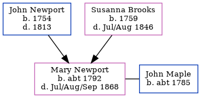

Mary Maple (née Newport) c1792 - 1868
[ Home ] | [ Calendar ] | [ Surnames Index ] | [ Family History ]The child of John Newport and Susanna Brooks, Mary Newport, the four times great-aunt of Nigel Horne, was born in Great Hardres, Kent, England c. 17921,2,3,4. She was married to John Maple.
Throughout her life, Mary lived in several places: in Ickham, Kent, England in 18411; in Ickham and Well, Kent in 18512; and in Ickham in 18613 which is where she died in Jul/aug/sep 18684.
Parents
- John was born in 1754
- Susanna was born in 1759
Citations
- 1841 England Census Online publication - Provo, UT, USA: The Generations Network, Inc., 2006.Original data - Census Returns of England and Wales, 1841. Kew, Surrey, England: The National Archives of the UK (TNA): Public Record Office (PRO), 1841. Data imaged from the National
- 1851 England Census Online publication - Provo, UT, USA: The Generations Network, Inc., 2005.Original data - Census Returns of England and Wales, 1851. Kew, Surrey, England: The National Archives of the UK (TNA): Public Record Office (PRO), 1851. Data imaged from the National
- 1861 England Census Online publication - Provo, UT, USA: The Generations Network, Inc., 2005.Original data - Census Returns of England and Wales, 1861. Kew, Surrey, England: The National Archives of the UK (TNA): Public Record Office (PRO), 1861. Data imaged from the National
- England & Wales, FreeBMD Death Index: 1837-1915 Online publication - Provo, UT, USA: The Generations Network, Inc., 2006.Original data - General Register Office. England and Wales Civil Registration Indexes. London, England: General Register Office. © Crown copyright. Published by permission of the Cont
Family Tree
Generated by Ged2Site. Last updated on Jul 20, 2025